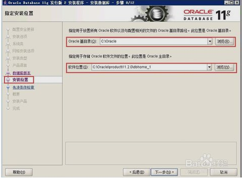

|
1.打开安装包，找到安装文件“setup.exe”，双击进行安装，如图所示 |
2.配置安全更新。电子邮件可写可不写，取消下面的“我希望通过My Oracle Support接受安全更新(W)”，如图所示，单击下一步 |
|
3.安装选项。直接选择默认的“创建和配置数据库”，如图所示，单击下一步 |
4.系统类。由于咱们安装的是服务器，所以选择“服务器类”，如图所示，单击下一步 |
|
5.网格安装选项。选择“单实例数据库安装”，如图所示，单击下一步 |
6.安装类型。选择“高级安装”，如图所示，单击下一步 |
|
7.产品语言。直接默认即可（简体中文、英语），如图所示，单击下一步 |
8.数据库版本。选择“企业版”，如图所示，单击下一步 |
| 
9.安装位置。填入安装路径（只需要填“Oracle基目录”即可，“软件位置”会自动生成），如图所示，单击下一步 |
10.配置类型。选择“一般用途/事务处理”，如图所示，单击下一步 |
|
11.数据库标识符。填入全局数据库名和SID，如图所示，单击下一步 |
12.配置选项。切换到“字符集”选项卡，选择“使用Unicode（AL32UTF8）”，如图所示，单击下一步 |
|
13.管理选项。直接单击下一步，如图所示 |
14.数据库存储。直接单击下一步，如图所示 |

15.备份和恢复。如果需要对数据进行备份，就启用自动备份，这里选择“不启用自动备份”，如图所示，单击下一步 |
16.方案口令。为了便于测试，这里使用了相同的密码，实际部署时可根据实际情况自行决定 |
|
17.概要。完成先决条件检查后，单击完成就可以正式开始安装了，如图所示，单击下一步进行安装 |
18.完成。这时安装已完成，单击关闭即可 |
|
19.测试一下。打开Oracle自带的SQL PLUS，如图所示 |
20.输入用户名、密码（就是第16步设置的密码），测试成功！可以直接输入SQL语句了！需要注意的是，这里Oracle输入的口令是不显示的 |